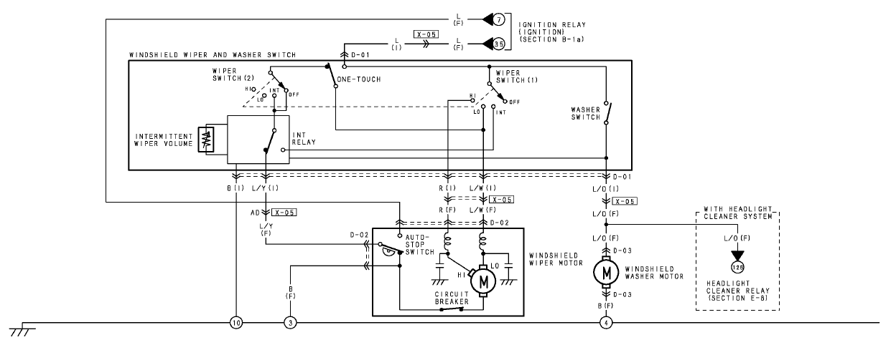
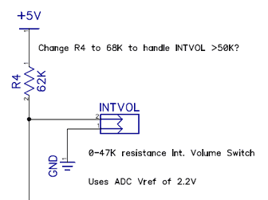
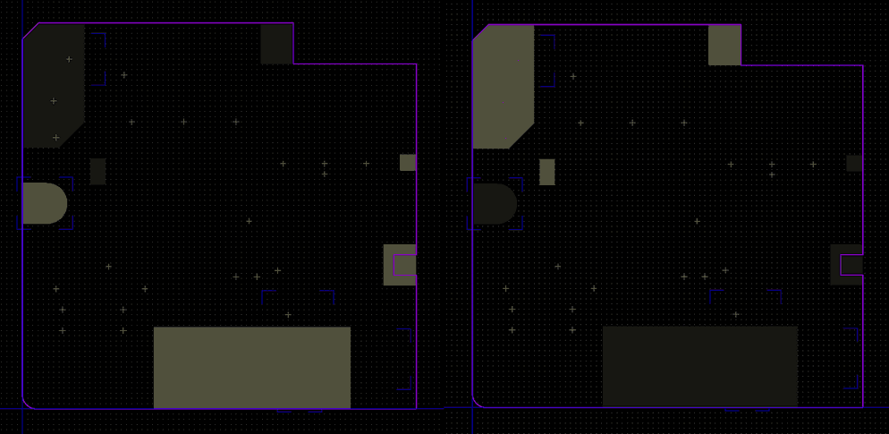

Speed-Sensitive Windscreen Wipers
Upgrade for Mazda RX-8
Introduction
This is a project I worked on for a while during 2017-18. I'd had this idea kicking around in my brain for a couple of years before then, originally sparked one day when I happened to be looking at the wiring diagram of the RX-8 concerning the windscreen wiper system.
I'm sure we've all experienced the annoying scenario of driving in that kind of rain that requires a reasonably speedy wiper setting, but when you come to a standstill is barely touching the windscreen, requiring re-adjustment of the wiper speed. Pretty frustrating to have to be frequently tweaking the intermittent mode setting knob in repetitive speed-up-slow-down traffic.
One feature that many newer cars have that can be pretty convenient for this scenario is speed-sensitive wipers. This handy feature will track the speed of the vehicle, and lengthen the wiping interval as the car comes to a halt.
So, I decided to investigate to see if it would be possible to retro-fit such a feature, as that initial spark of an idea in my head suggested it might be.
After a fair bit of work reverse-engineering how the standard wiper control system works, and several iterations of design I developed a nicely integrated upgrade that is pretty easy to install.
Along the way I also even managed to eliminate another bug-bear of mine regarding the windscreen washer system. Holding the washer switch long enough for it to auto-wipe wastes far too much washer fluid, and the single wipe it does is never usually enough to get rid of whatever crap you're trying to clean off.
How the Factory-Standard Wiper System Works
Here I'll attempt to describe how the standard intermittent mode wiper control system works on the RX-8. If you have a copy of Mazda's electrical diagrams, and flip to the Windshield Wiper and Washer section, you can see how the switches, motor, etc. are connected to each other, but it really doesn't tell you much about how it implements the intermittent mode operation.

The wiper stalk assembly comprises several parts:
- Switch contacts for low-speed, high-speed, intermittent and momentary ("one-touch") wiper modes. The various switches are activated by moving the stalk vertically.
- A secondary switch contact for the windscreen washer. This is activated by pulling the stalk towards the driver horizontally.
- A rotary knob located on the stalk which controls the delay interval used in intermittent mode.
The low, high, and momentary switch positions directly switch current through to the wiper motor, which has two inputs, one for each speed (momentary mode uses low speed). The intermittent and washer positions do not do this, however, but instead hand control of the motor to additional circuitry.
All of the 'smarts' for intermittent and wash modes are implemented by the circuit board on the back of the wiper stalk assembly:
When the circuit board is removed from the wiper stalk, you can see that there's not much on the other side apart from a relay, some diodes, capacitors, a transistor, and a connector.
I reverse-engineered this circuitry, and created this schematic:
It can essentially be split into two separate parts: the intermittent mode variable interval timer, and the wash auto-wipe. Both parts ultimately cause a relay to be triggered, which switches power through to the low-speed input of the wiper motor. Both parts operate on a relatively straightforward timing mechanism called an RC delay circuit (where 'R' stands for 'resistor' and 'C' for 'capacitor').
For those not electronically-inclined, imagine you have a hosepipe with water, and a bucket to be filled. The water is the electricity, your thumb on the end of the hosepipe is the resistor, and the bucket is the capacitor. If you almost completely cover the end of the pipe with your thumb, the bucket fills slowly. If you release your thumb, the bucket fills much more quickly. Therefore, by adjusting your restriction (i.e. the resistance to flow) on the pipe, you vary the period of time it takes to fill the bucket.
In our pipe-and-bucket metaphor, when the bucket gets full and starts to overflow, this is what triggers the transistor that powers the coil of the relay and switches the wipers on.
What happens with the intermittent mode 'volume' switch (as Mazda call it), is that as you twiddle the knob between the different settings, you are literally just adjusting the value of the resistive part of the circuit - that is, operating a variable resistor (which to be technically correct, is actually called a rheostat or potentiometer).
With the washer auto-wipe, when the stalk is pulled it switches in the top-most part of the circuit, which has a fixed-value resistor and capacitor that equate to a fixed delay of around 2 seconds, and that overrides any signal from the intermittent mode RC timer.
At this point, you may have noticed something: surely once the relay is triggered, how does the transistor controlling it get switched off? Otherwise, the wipers would just continually go on and on with no pauses, as if you had the stalk in the '1' position. This is where the auto-stop mechanism comes in to play.
The auto-stop mechanism is what ensures the wipers return to their parked position, even if you turn the wipers off mid-sweep. It does this via the wiper motor assembly itself having a switch integrated within that takes over provision of the power feed until a full cycle has been completed.
The intermittent mode circuitry also takes this feed and supplies it to the point marked 'J7' in the diagram above - the other leg of the capacitor involved in the timing. It's hard to explain in simple terms what happens here, but I'll try. Normally, this point is at ground - i.e. 0V. But when 12V is fed there, the zero side is now +12, so on the other side what was previously 12 also becomes 24. This excess voltage quickly gets absorbed and the cap now discharges, because it has 12V on both sides. When the wipers complete a cycle, the auto-stop switches back to 0V, but because the cap now has a difference of 12V forced across it in an uncharged state, it pulls the other side to zero (or even negative), and this turns off the transistor, and thus the relay!
Ingeniously simple though this electronic circuit may be, it has a downside: it will be imprecise. This is because the exact timing is dependant on the exact resistance and capacitance of the component parts. Because of manufacturing tolerances, these are never exact to start with. Resistors can also vary by temperature. Plus, electrolytic capacitors (as used here) degrade with age, so their characteristics will change over time. All this results in the fact that every single RX-8 will exhibit slightly different timing of the windscreen wipers in intermittent mode.
In conclusion: the standard control system is quite a clever piece of electronics, but at the same time also kind of rudimentary. It's a purely analogue system, so there's little scope for things to go drastically wrong, but it is also kind of imprecise.
Design Considerations
Now that we know how the factory-standard system works - which essentially just involves switching a relay according to the user's input from a potentiometer - we can design a replacement system that operates according to our own principles, including that it should vary the wiping delay according to the vehicle's current speed.
Before I show the final design, I will comment on a number of significant areas that required a lot of consideration, or more consideration than one might expect.
Form Factor
As we intend to entirely replace the standard intermittent wiper control circuitry, this involves replacing the original circuit board in its entirety. This means that we will need to reproduce the size and shape, as well as its interface and mounting points.
The standard circuit board interfaces with the switch mechanism by way of vertical pins that protrude through appropriately-located holes in the circuit board, where they are soldered. This is in fact also the sole way the board is mounted - there are no screws or clips.
Circuit Board Dimensions
Making measurements of the board enables us to create a board outline and lay out all the necessary holes:
(All dimensions in millimetres. Coordinates of smaller holes not shown to avoid crowding the diagram.)
There are some key details of the board's dimensions that we need to keep the same as (or similar to) the original board:
- The chamfering of the top- and bottom-left corners.
- The notch on the right hand side and larger circular hole on the left side.
The first is required because there is a plastic cover that snaps over the back of the assembly, clipping on to 3 hooks on the sides:
The bottom-left corner of the board is actually enclosed by the skirt of the cover, so if it were to remain square, the cover would not fit! The original board uses a large chamfer here; I have chosen to use a rounded corner because the inside surface of the cover is curved, so matching that radius gains some surface area on the board. The top-left corner does not have such a restriction (the cover sits flush on the surface), but a square corner would poke out.
The second detail, the large hole and notch, are features that simply serve to 'locate' the circuit board on the assembly. I say 'locate' in quotes, because in actuality the holes for the switch pins have finer tolerances and are the determining factor there.
You may notice that there is one feature I have not chosen to replicate: the large cut-out on the bottom edge. This is not actually necessary, because neither the cover nor the body of the stalk assembly impinge on this space. I chose to have a straight edge here for more board area (which will be needed!).
Component Placement
On the original circuit board, all large components (relay, etc.) are mounted on the reverse side of the PCB, their height occupying the interior space of the assembly. With the board removed from the assembly, we can see what space we have to work with when placing larger components. The headroom we have here is about 18 mm.
The largest component, the relay, pretty much has to sit at the top-right just like the original, because that is the largest area available. There is some slight wiggle room here, though, should it be needed.
The other component that we do not have any flexibility in placing is the connector that receives the plug for the potentiometer on the stalk itself. This must sit at the lower-middle of the left side, because it must poke through the gap in the side of the assembly. A matching channel is present in that part of the cover that allows the wiring to be routed into the stalk.
In addition to the existing connector, on our design we will need to add another: for input of the VSS signal. The only area where this can be placed and have a wire routed out under the cover is on the bottom edge. There is a vertical tab here on the assembly body, but luckily it is half the height of the others, so will not pose a problem for a small connector.
All other large components such as capacitors can be located wherever they will fit.
Turning attention to the top (outward-facing) side, one might think we are free of any further restrictions on placement if we use surface-mount components, but that would be wrong! Referring back to the earlier image of the translucent plastic cover, you will see that there is a recessed area at the lower-middle. This actually sits pretty much flush to the surface of the PCB, so even the tiniest of SMD components would have a hard time squeezing in here. Effectively, this area becomes a 'no-go' area.
Still on the subject of the plastic cover, there is one further detail that must be considered when determining component placement: because the edge of the cover sits flush with the surface of the board at the top, right, and part of the left edges, we must make allowance for the thickness of the cover. The cover is approximately 1.5 mm thick, so we cannot put any components in this 'margin' area either.
Getting the Vehicle's Speed
How exactly does one go about getting a some kind of speed signal from the car? In days of yore, the transmission had an output that would drive the speedometer (and odometer) directly, and if you wanted that information, you had to tap into that signal. The RX-8 is a more modern vehicle, so there are two possible ways:
- Digital OBD data from the CAN bus
- Analogue Vehicle Speed Signal (VSS)
The former is easily obtained if you have an OBD dongle and software for your laptop, tablet or smartphone (e.g. Torque Pro). However, as the CAN bus is a complex digital signalling system, it is a complicated task to implement this method, so something simpler is desirable.
The latter is a signal provided by the RX-8's ABS/DSC control module (responsible for the stability control and anti-lock braking system). It can be found on the wiring harness leading to the audio head unit. On non-Bose audio equipped RX-8s, it is used for automatic volume control; on sat-nav equipped RX-8s it is used as an auxiliary speed input when GPS signal is weak or lost (e.g. in tunnels).
The VSS signal is actually pretty simple. It is just a square wave that varies in frequency according to the speed the car is currently travelling.
The nature of the VSS isn't actually described in any place I could find in Mazda's factory service information, so I had to measure and characterise the nature of the signal. Here are the pertinent details:
- DC square wave, 5V peak-to-peak
- Fixed 50% duty cycle
- Frequency equates to vehicle speed in miles per hour (e.g. 50 mph = 50 Hz)
- When stationary (i.e. 0 mph), signal rests low, at 0V
- Signal given in both forward and reverse
With a microcontroller timer-counter, it is fairly easy to measure the frequency of such a signal.
Stalk 'Volume' Potentiometer
The rotary knob on the stalk that controls intermittent mode delay is essentially a potentiometer with several detented positions. It is connected to the stalk assembly PCB with two wires terminated with a small 2-pin connector.
Connector
In order for our new design to be a direct replacement, we must use a connector that fits the existing plug. Therefore, we need to identify the manufacturer and specific part of the connector on the original board. However, with connectors that's often difficult because they rarely carry their part number on the part itself.
A good first thing to do is identify the connector's primary features and dimensions:
- Two pins
- 2.5 mm pin pitch (approx. - possibly 2.54 mm, both are within the realm of measurement error)
- Through-hole, with 2 additional mounting pins (pitch approx. 5 mm)
- Right-angle orientation
- No latch/lock
This will allow us to narrow down the range of potential candidates greatly. Another big help is to identify the manufacturer. This can sometimes be easy because often their name or logo is on the part.
In this respect we are in luck. Careful examination using a magnifying glass reveals the letters "MXJ" on the rear of the part. These are the initials of Molex Japan. This makes sense, given that the Mazda is a Japanese car manufacturer. Also, knowing that it is of Japanese origin, we can make a fairly safe assumption that the pin pitch is 2.5 mm rather than 2.54 mm (or 0.1"), due to their preference for metric units.
Looking through the Molex catalogue, comparing other details such as height, width, and other dimensions, we find that this connector is a member of the Mini-Lock family. There is listed apparently only a single right-angle, through-hole 2-pin PCB connector in that family: part number 53426-0210.
Puzzlingly though, this part does not exactly resemble the one on the original board. That one has a shorter overall depth (with the pins not protruding so far out the back) and does not have the 'feet' at the back. It also has the additional mounting pins, whereas the candidate we have found does not.
Further searching reveals that Molex also do a range of through-hole Mini-Lock connectors that are supplied on paper tape, designed for automated machine-feeding. For some reason, these are not listed on the website under the Mini-Lock family. I only found reference to them in an old 'Transportation Products' PDF catalogue from 2010.
The 2-pin right-angle product in this range is part number 53426-0290, and its features from the part drawings exactly match those of the connector on the original board. Mystery solved! However, because this part appears not to be commonly stocked by distributors, we will ignore it in favour of the more common variant found earlier.
Characteristics
Rather than being continuously variable, the potentiometer has 9 detented positions, so whatever readings our system will take of the resistance will have a number of distinct values. Just determine a set of thresholds that distinguish each position setting, and away we go, right?
Not so fast! After analysis of several examples of stalk assemblies, I found that potentiometer characteristics varied quite significantly from unit to unit. Take a look at the following chart:
This chart plots the measured resistance (in kΩ) when a switch assembly's knob is turned to each position. At each position two measurements are taken: a minimum and maximum. This is because there is slop in the detents of the knob mechanism, so the resting position at each detent can vary. A total of 13 units were measured.
Your attention is called to the upper positions. Notice anything concerning? Many of the 'min' values of one position overlap with the 'max' values of its neighbouring position! If it's not clear, the table below shows it more clearly:
| Setting | 0 | 1 | 2 | 3 | 4 | 5 | 6 | 7 | 8 |
|---|---|---|---|---|---|---|---|---|---|
| Smallest Min | 0.0 | 1.3 | 7.6 | 13.8 | 21.4 | 27.6 | 33.7 | 40.3 | 42.7 |
| Largest Max | 1.2 | 6.1 | 12.8 | 20.1 | 27.8 | 35.0 | 41.0 | 49.1 | 50.3 |
The values in italics are where the smallest measured minimum of one position is lower than the largest maximum of the position immediately preceding. For example at position 7, min of 40.3 is less than max of 41.0 at position 6.
What does this mean? It means we cannot just have a general one-size-fits-all set of thresholds that can be used to map our potentiometer readings to an intermittent 'volume' setting. The solution to this will be to have a unique calibration of thresholds specific to each unit, stored in the microcontroller's non-voltatile memory.
Wiper Motor Current
When designing the PCB, we must give due consideration to the fact that the wiper motor has quite a high current draw. I didn't measure it, but sources talking about other vehicles give typical figures in the range of 3-5 amps. The current draw varies in proportion to the load on the wiper mechanism, which is essentially how much frictional resistance there is. However, it is not the typical operating current of the motor that we need to consider, but the peak current!
The relay in the original circuit is rated for 20A. This may seem excessive when the typical current draw is a single digit figure, but it isn't until you consider the entire wiper system electrical circuit as a whole that the reason for this becomes clear.
If you trace the factory wiring diagrams back towards the power supply, you will see that the whole wiper circuit is fused at 20A. What this means is that in order for the fuse to actually be the weakest link in the circuit (such that it'll be the first thing to blow), everything else downstream in the circuit to the wiper motor (i.e. switch, relay) must be able to handle peaks of at least 20A too.
What this means for our replacement circuit board is that we must not only use a 20A-rated relay too, but also be sure that our traces on the PCB can handle a brief 20A surge! Narrow traces would probably overheat and burn up if asked to pass that kind of load. But, because we are cramming a lot more componentry on to the board, we don't have the luxury of using fat, wide traces.
We can solve this problem by using PCBs made with 2 oz / 70 µm thickness copper layers instead of the normal 1 oz / 35 µm. The results of some calculations indicate that if we are willing to accept a rise in temperature of the copper trace of 70°C above ambient, we would need a 7.5 mm wide trace to sustain 20A. In the final design, layout constraints will dictate that we can't quite manage that width, having to reduce to 5 mm, but even like that we can be pretty sure our board won't catch fire if there is current surge!
Relay Noise
No, not electrical noise, but of the audible kind! When I built the first prototype unit, I used a bog-standard relay in an exceedingly commonly-available size (SPDT, aka "1 Form C", approx. 16x13 mm, 5 pins in a 10x10.2 mm square with fifth central pin offset by 2.5 mm). But, I soon realised this was not a great idea, and that there was something special about the relay present on the original board.
Common models of relay actually make quite a lot of noise when they switch, relatively speaking. An eminently audible 'click' or 'tock' noise. When such a relay is only about half a metre away from your head (as it is when sat in the vehicle), and it's making that noise every few seconds, and your rain-soaked car journey is a couple of hours long, it can soon become quite irritating!
Looking up the specifications of the original relay, a Taiko TA1-225 (later Panasonic ACTA23), I found that it is classified as a 'silent' relay, rated for operational noise of around 55 dB - less than that of a softly-spoken conversation. Regular relays are much louder - I would estimate about 70 dB.
At this point, however, I had already done the PCB design, incorporating a standard, commonly-available size of relay that the TA1 was not (it's quite large for its current rating). And, to top it off, even if I wanted to use the TA1, it was out of production.
Fortunately, Panasonic do an equivalent 'silent' relay in the form factor I was already using: the CQ series. I managed to acquire some of those, which turned out to be new-old-stock and branded NAIS; they, like Taiko, have also since been acquired by Panasonic.
Control Logic
The obvious choice to implement the control logic for our replacement system is with a microcontroller, as whatever behaviour is necessary can be programmed in code, making it possible to easily alter the behaviour at any time without hardware changes.
We need to choose a microcontroller that has all the following features and facilities:
- An analogue-to-digital converter (ADC) to read the input voltage from the 'volume' control knob potentiometer on the stalk.
- A timer/counter to read the square wave input representing the vehicle's current speed.
- Digital inputs to read the state of intermittent and washer mode switch inputs.
- A digital output to trigger the relay.
- Built-in EEPROM for storing configuration data, so operating parameters can be altered without changing and re-compiling the code.
- Operates on 5 volts. Using 3.3V would waste too much power in the linear regulator.
- A serial UART to aid testing and debugging (status and diagnostic output).
- Non-proprietary C language toolchain.
- Ubiquitous and readily-available - nothing exotic or hard to find.
Things that we don't need (or want):
- Large pin count. Few I/Os are needed, and we want it to be relatively small in footprint.
- High speed or 32-bit. There's nothing computationally intensive.
- Clocked from an external source (e.g. a crystal). We don't need high accuracy or precision of timing, as we're dealing with things on a human timescale - i.e. seconds, not microseconds.
The microcontroller that I chose was the Atmel (now Microchip) ATtiny841. It is an 8-bit AVR microcontroller that is part of the ATtiny family. It can run at 8 MHz on an internal oscillator, and comes in a 14-pin SOIC package. For a full list of it's features, consult the datasheet.
Schematic
Here is the complete schematic for the replacement circuit board (click for PDF):
For reference, here are the corresponding locations of each of the named pins on the stalk assembly:
Power Supply
The microcontroller and other peripheral circuitry run at 5V and have modest current demands, so it is feasible to use a simple linear regulator to drop the input power (nominally 12V battery voltage, but realistically anywhere between 11-14V) down to that voltage.
Our choice of linear regulator is the 5.0V fixed-voltage output version of the LM2931, chosen because it is an automotive-rated part that is specified to be able to cope with up to 60V load-dump situations, amongst other protections. We use the 8-pin SOIC version, as our output current requirement is fairly low, and we want to minimise the space taken on the board.
Several manufacturers produce this part: ON Semi, TI and ST. We go with the ON Semi version, as it has a generous maximum input voltage rating of 40V, whereas curiously the Texas Instruments version is only rated for 26V. One note also about the ST version: it has an additional 'inhibit' input on pin 5 even for the fixed-voltage version. We take the additional step of tying the normally non-connected pin 5 to ground (turning the inhibit off) should the ST version ever need to be used.
Wash, Intermittent Mode & Autostop Inputs
These inputs are activated by the switch mechanism of the wiper stalk assembly.
The wash and autostop inputs are 12V signals, so we need to reduce that down to under 5V - the VCC of our microcontroller. We do this using a resistor voltage divider. The resistor values need to be chosen carefully so that even if the input voltage varies (as it may do when the vehicle is running), we still get a 'high' level at the microcontroller pin (the threshold for which is 60% of VCC, so approx. 3V with 5V VCC). Choosing values of 10K and 4.7K should work for any input level between about 10 and 15 volts, giving 3.2 to 4.8 volts out.
Because these inputs effectively come from raw, unconditioned battery voltage, it would be best to also have some protection to guard against the unexpected. Should the input voltage ever reach higher than 15V, the divider will give more than 5V, which is bad for our microcontroller, so we also incorporate a 5.1V zener diode which will shunt anything over that level. However, if it were to just shunt the excess voltage straight to ground, that would effectively be a short-circuit, so we place the zener after the 10K series resistor, which will serve to limit the current. We also add a shottky diode for reverse-polarity protection.
We can also add some filtering using the same 10K series resistor. Adding a 0.1µF capacitor to ground turns the two components in combination in to a low-pass filter, which will get rid of any high-frequency noise or transients. The cut-off frequency with these component values is around 160 Hz, which should be plenty of headroom for even the most rapid switch actuations.
The intermittent mode switch mechanism is different: it simply bridges two pins on the assembly, rather than switching in 12V. Both of these pins can therefore be under our control, so we can feed one side of the switch with our regulated 5V, and need less protection on the other side. No voltage divider or diodes necessary - just the same low-pass filtering as the others, plus a pull-down resistor.
VSS Input
As mentioned before, the VSS signal is variable-frequency 5V square wave, so we should in theory be able to feed it straight in to the microcontroller. However, because this signal's origin is external, it would be prudent to add some protection here too. (Imagine what happens if the VSS wire accidentally gets shorted to 12V!) We use the same diodes and series resistor as the wash and autostop inputs. Additionally, we also use a low-pass filter for noise rejection, but this time tuned using a 47nF capacitor to a higher cut-off frequency of around 338 Hz (because 160 Hz would be a little too close to the RX-8's stated top speed of 147 mph).
Potentiometer Input

Because the intermittent mode 'volume' knob is essentially a potentiometer (albeit one with discrete steps), the intermittent mode input will be an analogue signal. This will be fed to the microcontroller's analogue-to-digital converter (ADC).
The nominal maximum resistance of the potentiometer is 47K. If we make it the lower half of a resistor divider in combination with an upper 62K resistor, and feed the divider from 5V, we can get an output voltage that varies between 0 and 2.15 volts. This will be ideal for use with our microcontroller's 2.2V ADC reference voltage.
Why not use 5V (i.e. VCC) as the full-scale reference of the ADC? Yes, we could use a 1K resistor on the upper half of the divider, and get about 4.9V out when the pot is at its maximum 47K. However, we have to consider the situation where the pot is at the opposite end of travel, where it reads zero ohms (and yes, it does actually go down to zero!). Then we would be pulling 5mA from the 5V supply, which is a little high.
You may see the note on the schematic with regard to changing R4 to 68K. Some examples of wiper stalk assemblies were later found (after the design had been finalised) to measure as high as 50K. This would bring the output to 2.23V, which is over the reference voltage, meaning the input would be clipped. Increasing R4 scales that back down to 2.12V.
Relay Output
The relay we have chosen (Panasonic/NAIS CQ1-12V) has a coil that is to be driven with 12V, so we will need to switch this indirectly using a transistor. The relay's coil has a nominal resistance of 225 ohms, which makes it draw 53mA at that operating voltage. Any small, cheap, generic BJT should be able to handle that.
As we're using a BJT, the base of the transistor will need a series current-limiting resistor that allows the transistor to pass the required coil current (perhaps up to 63mA at VBAT of 14V). A 4.7K resistor gives 1mA from the microcontroller's 5V output, which should be plenty for any transistor with a gain of at least 100, but without taxing the MCU with excessive current draw.
To handle relay coil turn-off inductive voltage spikes (which can damage the transistor), instead of using the traditional arrangement of a diode in anti-parallel with the coil, we are going to instead use a zener diode to ground. This has an advantage over the traditional circuit, in that it makes for a quicker turn-off (or "pull-in") of the relay. You don't get the slight delay from the re-circulating flyback current momentarily keeping the relay on past the point the transistor turned off. This helps when switching inductive loads (like motors), as it reduces arcing on the relay contacts due to the faster pull-in movement, which helps prolong the life of the relay.
The only other part worth mentioning here is the diode D10, used to guard against reverse polarity. This is a wise precaution, because otherwise the zener, forward-biased in that scenario, would allow current to bypass the transistor, causing the relay to turn on unexpectedly.
Microcontroller
As mentioned earlier, our microcontroller of choice is the Atmel ATtiny841. Fortuitously, the SOIC-14 package has the exact number of I/O pins that we need - no more, no less!
Not much to describe here. Inputs and outputs are routed to port pins in the following manner:
- Intermittent 'volume' input to PA0, for ADC channel zero.
- UART header TX/RX to PA1/PA2 (TXD0/RXD0).
- VSS to PA3, the T0 external clock source for Timer/Counter0.
- ISP programming header to PA4-6 (SCK/MISO/MOSI).
- Relay output on PA7.
- Wash, intermittent mode, and autostop inputs to PB0-2.
- Reset to PB3. Externally pulled high and decoupled for robustness.
PCB Layout
As the board size, shape, and location of mounting/connection pins are predetermined by the need to replicate the original, as well as things like locations of the relay and potentiometer connector, most of the business of laying out our board is just a question of fitting things in where they can go.
Filtering and protection for wash and autostop inputs are at the bottom-left, near their pins. Relay coil drive is placed inside the footprint of the relay. Intermittent mode switch input filtering is also near one of those pins. The VSS input connector, as mentioned previously, needs to be at the bottom edge, so its protection and filtering components are nearby. That only leaves the power regulation and microcontroller to be located, and seeing as we only have the top-left area to play with, that's where they go!
High-current power traces - from the power and autostop pins to the relay, and from the relay to low-speed output pin - are ran on the bottom of the board. As discussed before, they are nice and fat (at least 5 mm in width) to handle high current peaks in the double-digits of amps.
Apart from these basics, there are several other things worthy of note, which I will elaborate on.
Switch Assembly Pin Through Holes
You may notice that the switch assembly pin through holes only have pads on the top side. This is because they are intended to be non-plated through holes - i.e. just like on a single-sided PCB. But why? Vias are needed to route the trace to the bottom layer; why not just connect the traces on the bottom side?
I discovered on an early prototype board - where the high-power traces were indeed connected on the bottom side of the hole - that this caused a serviceability issue. If the board needed to be desoldered from the switch assembly for any reason, it made it very hard to do so without damaging the board.
Because the switch assembly pins are effectively large (relatively speaking) strips of copper metal, they act like a heatsink, sucking away all the heat from a soldering iron tip. So, on a plated through hole, the solder inside the hole is much more likely not to want to flow, meaning it's not easy (or impossible) to remove all of it. Thus sometimes when pulling the board off, the plating inside the hole would be ripped out.
On some of the holes, we rely on the hole plating to provide signal to the input circuitry on the top side, so when it is missing or damaged, we may no longer have a reliable connection.
The problem was solved by making the solder jointing take place exclusively on the top side of the board.
For the transition between top and bottom without using the pin through holes, vias on the trace were used instead. Care was taken to use an appropriate number and size of vias (9 x 0.6 mm) to be able to handle the current demand.
Keep-out Areas
As discussed previously, there are certain areas on the board - both top side and bottom - where components cannot be placed. This is due to imposition of things like the plastic cover on the top, or parts of the switch assembly body on the bottom.

These were roughly marked on the PCB layout with 'keep-out' shapes. It wasn't worth drawing one of these zones for the 1.5 mm margin area at left, top, and right edges (due to the plastic cover thickness) - just had to make sure to bear it in mind when placing components.
The 'Runt' Pin
On the keep-out zones shown above, you can see that there is an area defined at the top-right. You'll also see there is a rectangle of solid silkscreen placed there on the bottom side of the PCB. Why?
There is actually a vestigial pin there that isn't as tall as the others, but tall enough to touch the underside of the board. I call it the 'runt' pin.
It turns out that this pin, for whatever reason, is connected to the 12V power supply (i.e. the actual 'PWR' pin). No idea why it exists - perhaps something to do with how the wiper stalk assembly is manufactured?
Because this pin carries power and touches the underside of the board, where there is a ground plane, the only thing preventing a direct short-circuit between power and ground is the thin layer of solder mask. So, I felt it prudent to add a little extra insulation in the form of the silkscreen. I could have removed the ground plane from this area, but I needed to have a ground-stitching via nearby, so couldn't.
Construction and Installation
This section will document what is involved in building a PCB, programming the firmware, modifying a wiper stalk assembly, and installation.
PCB
The PCB is a standard 1.6 mm thickness 2-layer board, with 2 oz / 70 µm copper layers.
Gerber and NC drill files for the PCB can be found in the GitHub repository. They should be suitable for submission as-is to any decent manufacturer. Note that there are two drill files: one for plated through-holes (PTH), and one for non-plated through-holes (NPTH).
Important: do not be tempted to have the PCBs manufactured with a 1 oz / 35 µm copper layer thickness! The thicker 2 oz copper is required to handle the peak current demands with the constrained sizes of trace that can be fitted on the board.
Bill of Materials
Below is the listing of parts required to assemble a PCB:
| Reference Designator | Type | Value | Package | Specification | Manufacturer [1] | Part Number [1] | Qty |
|---|---|---|---|---|---|---|---|
| C1, C4, C5, C7, C8, C9 | Ceramic Capacitor | 100nF | 0805 | 50V, ±10%, X7R | - | - | 6 |
| C2 | Ceramic Capacitor | 10µF | 1210 | 50V, ±20%, X7S | - | - | 1 |
| C3 | Electrolytic Capacitor | 100µF | 16V, ±20%, 85°C, 5mm diameter, 2mm lead pitch, ≤11mm height | - | - | 1 | |
| C6 | Ceramic Capacitor | 47nF | 0805 | 50V, ±10%, X7R | - | - | 1 |
| D1 | Zener Diode | 18V | SOD-123 | 500mW, 5% | - | - | 1 |
| D2, D3, D6 | Zener Diode | 5.1V | SOD-123 | 500mW, 5% | - | - | 3 |
| D4, D5, D7 | Schottky Diode | SOD-123 | 30V Vrrm, 200mA If | - | - | 3 | |
| D10 | Diode | SOD-123 | 100V Vrrm, 200mA If | - | - | 1 | |
| INTVOL | Header | Mini-Lock series, 2-pin, right-angle, 2.5mm pitch | Molex | 53426-0210 | 1 | ||
| VSS | Header | XH series, 2-pin, right-angle, 2.5mm pitch | JST | S2B-XH-A | 1 | ||
| K1 | Relay | SPDT (1 Form C), 12VDC, 20A | NAIS (Panasonic) | CQ1-12V | 1 | ||
| Q1 | BJT NPN | SOT-23 | 65V Vce, 100mA Ic, ≥100 hFE | - | - | 1 | |
| R1, R2, R7 | Resistor | 4.7kΩ | 0805 | 125mW, 1% | - | - | 3 |
| R3, R9, R10, R11, R13 | Resistor | 10kΩ | 0805 | 125mW, 1% | - | - | 5 |
| R4 | Resistor | 62kΩ | 0805 | 125mW, 1% | - | - | 1 |
| R5, R6, R8 | Resistor | 10kΩ | 1206 | 250mW, 1% | - | - | 3 |
| R12 | Resistor | 0Ω | 0805 | 125mW, 5% | - | - | 1 |
| U1 | Linear Voltage Regulator | SOIC-8 | 5.0V, ±5% | ON Semiconductor | LM2931D-5.0G [2] | 1 | |
| U2 | Microcontroller | SOIC-14 | 8KB Flash, 512B SRAM, 512B EEPROM | Atmel (Microchip) | ATTINY841-SSU | 1 |
Notes:
Where a part's manufacturer and/or part number are marked with a dash, any part that is the listed package type, value, and meets (or exceeds) specification can be used. For example, I used a BC846 for transistor Q1, but something with equivalent specifications and pin-out like an MMBT3904 will do fine.
There are several variants of the ON Semi LM2931, with different output voltage tolerances (3.8%, 5%) and packaging (tube, reel). All the following alternate part numbers are suitable substitutes:
- LM2931D-5.0R2G (5%, reel)
- LM2931AD-5.0G (3.8%, tube)
- LM2931AD-5.0R2G (3.8%, reel)
Not listed in the table above - as they are not parts installed on the PCB - but required for installation in the vehicle and use, are the following parts for making the VSS connection to the secondary connector on the board:
| Item | Specification | Manufacturer | Part Number | Qty |
|---|---|---|---|---|
| Housing | XH series, 2-pin, 2.5mm pitch | JST | XHP-2 | 1 |
| Crimp Terminal | XH series, 22-28AWG, tin-plated | JST | BXH-001T-P0.6 | 1 |
| Wire | 22AWG, 1 metre | - | - | 1 |
| Tap/Splice | Suitable for 18-22AWG wire | - | - | 1 |
Assembly
Assembly of a PCB should be fairly straightforward for those with some experience in soldering of surface-mount components. No ultra-fine pitch components are used - the smallest passives are 0805 size, and all ICs feature a 1.27mm (0.05") pin pitch.
All polarised components have their orientation marked on the silkscreen. Diodes have their cathode marked with a dot. Electrolytic capacitors have the negative terminal marked within the component outline by a shaded band, and the positive terminal with a plus sign ("+"). Take care also to note the orientation of SOIC chips; the pin 1 end is marked with a notch in the silkscreen outline.
Do not forget also that all through-hole components are to be installed on the bottom side of the board!
To make up the VSS wiring connection, you will need a crimping tool appropriate for JST XH terminals. Note that it only consists of a single wire, so only one terminal will be fitted to the plug; which pin of the plug is indicated by the arrow marker on the PCB silkscreen.
Firmware Programming
Once the complete PCB has been assembled, but before installation and use, the firmware of the microcontroller will need programming to its flash memory, and calibration and configuration data to the EEPROM. A pre-compiled firmware binary file, in Intel Hex format, may be found in the GitHub repository. Alternatively, if desired, the firmware source code may be compiled from scratch.
Programming is performed using the ISP header on the board, using the SPI protocol. You will need a compatible programming adapter, such as one of the following:
- Atmel AVR-ISP MkII
- Atmel ICE
- USBasp
It is reportedly also possible to program AVR microcontrollers with Microchip PICkit 4 or Snap programmers, but this has not been tested. There is also the option of using an Arduino Uno development board that is programmed with the ArduinoISP sketch.
Potentiometer Characterisation Procedure
Before programming, it is necessary to collect characterisation data from and calculate calibration data for the particular donor wiper stalk assembly's intermittent mode knob potentionmeter. Follow the procedure below. You'll need two small wires like breadboard jumpers, paper clips, pins, etc.
Remove the translucent plastic cover from the rear of the unit by unhooking the six tabs around its perimeter. Use a small, flat-bladed screwdriver or similar tool.
Unplug the connector from the side of the circuit board. Free the wires from the slot in the stalk.
Take the jumper wires and insert one into each hole of the plug. Do not force overly-large wires into the holes, as you risk damaging the plug and/or leaving the plug with loose-fitting contacts afterwards.
Set your multimeter to resistance mode. If non auto-ranging, select the next highest range above 50K. Attach each lead of the meter to one of the wires protruding from the plug.
For each position (a total of 9) on the stalk's rotary knob, you will record resistance readings. Because the knob has some slack in where it comes to rest at each position, you'll need to record two readings for each position between the first and last: a 'min' and 'max' (any slack on the first and last positions has no effect on the resistance).
Start at the top-most (longest interval) position and work your way down.
At each position except the first and last, to make the 'min' reading, gently nudge the knob downwards as far as possible without it clicking over to the next position and note the reading; to make the 'max' reading, likewise gently nudge the knob upwards as far as possible without clicking back to the previous position.
You should end up with a table of resistance readings similar to the following example (where top is '8' and bottom is '0').
Setting Min. Resistance (kΩ) Max. Resistance (kΩ) 8 46.8 46.8 7 43.3 45.3 6 36.4 38.4 5 30.5 31.5 4 23.8 24.6 3 15.8 17.7 2 9.5 11.1 1 3.5 4.5 0 0.0 0.0
Enter these readings into the EEPROM Data Calculator tool (to be found in the GitHub repository). Save the generated data in to a file named with a '.hex' extension. This will be used later to program the microcontroller's EEPROM.
ISP Connection
How to connect to the ISP pins when there can be no header installed? A simple trick is to use an elastic band and common 'DuPont'-style jumper wires with male pins at one end. The male jumper wire pins can be simply inserted in to the holes on the board for the ISP connection and the elastic band stretched around the board and wires to hold them in place.
If jumper wires with male pins are not available, then female wires can be used together with a 6-pin 0.1" header strip. The header strip is plugged in to the jumper wires and the remaining stubby end (i.e. the end that is normally soldered in to the board) inserted in to the holes on the board.
Flash and EEPROM Programming
Programming of the microcontroller's flash and EEPROM memories can be performed a number of ways:
- Atmel Studio 7's Device Programming tool
- AVRdude
- Microchip MPLAB X IPE
Specific details of the programming process using these tools are a bit out of scope to be described here, but there are a number of salient points that should be noted:
The board will need to be powered with 5V via the VCC pin of the ISP connection. If your programming adapter is not capable of powering a connected device, then you'll need to make alternate arrangements (e.g. a bench PSU).
In your programming tool, make sure to specify the correct microcontroller part - an ATtiny841.
- Note for AVRdude users: as of time of writing, the current AVRdude version (6.3) does not have built-in support for ATtiny841 microcontrollers. A custom configuration file with definitions for the ATtiny841 will need to be used. One can be found in the GitHub repository. Use the
-Cargument with a+prefix on the path to use it (e.g.-C +avrdude_attiny_441_841.conf), together with-p t841to specify the part.
- Note for AVRdude users: as of time of writing, the current AVRdude version (6.3) does not have built-in support for ATtiny841 microcontrollers. A custom configuration file with definitions for the ATtiny841 will need to be used. One can be found in the GitHub repository. Use the
Fuses should be programmed first. Without this, the device will not function properly (or at all!). Fuse settings are as follows:
- Extended:
0xF5 - High:
0xDC - Low:
0xC2
- Extended:
When programming device memories, do the flash memory first and then the EEPROM. If the other way round, unless mitigating options are set in the programming software, the flash programming may also erase the EEPROM.
Wiper Stalk Modification
This section documents the procedure for modification of a standard donor wiper stalk assembly, also encompassing a testing procedure for the donor unit. If you plan to modify the stalk assembly currently fitted to your vehicle, you'll need to remove it first - see the Vehicle Installation section for details. However, it is recommended to acquire a second stalk assembly to modify; then, if anything goes wrong, you still have a working original in your car.
Tools and equipment required:
- Multimeter with continuity check and resistance measurement modes
- Soldering iron
- Solder
- Flux
- Vacuum de-soldering pump (a.k.a. "solder sucker")
- Copper de-soldering braid/wick
- Small flat-bladed screwdriver
Original Circuit Board Removal
- Apply flux to the seven solder joints of the mounting pins.
- For each of the joints, remove the bulk of the solder using the de-soldering vacuum pump and soldering iron.
- Use some de-soldering braid to wick away any remaining solder on each joint, such that none remains in the gap between the protruding pin and the perimeter of the hole. Application of additional flux may help here.
- Using a small flat-bladed screwdriver (or other similar tool), pry between the circuit board and the plastic body of the unit in order to lift the board from the protruding pins. Do this gently a little at a time around all sides of the board. The board may seem still rigidly stuck in place at first. With repeated gentle wiggling and prying it will soon become looser. Do not excessively lever one side of the board, as you risk bending the pins.
- Lift the board up and away from the unit.
- Inspect the vertical metal pins. They should be straight and free of any blobs of solder. If there are solder blobs remaining, try swiping them away with the iron, or use de-soldering braid to wick it off.
- Because the metal pins that run through into the physical switch mechanism in the body get hot during the de-soldering process, some of the mechanism's lubricating grease may have melted and seeped out from the gaps in the side of the unit. If so, clean it off.
Stalk Switch Mechanism Testing
Before installing the new PCB, it is wise to ascertain that the physical switching mechanisms of your donor wiper stalk assembly are actually working correctly and with acceptable characteristics. This procedure will help satisfy that everything is working okay. Follow the steps with reference to the table below when called for.
Note: alphabetical pin labels reference the following pin-out diagram. This depicts the pins of the main connector on the stalk assembly when viewed with the unit in a position where the stalk is pointing to the right and the connector facing towards you.
- Put your multimeter in continuity-check mode. Following the table above, for each switch position (i.e. row of the table), verify continuity exists between the pairs of connector pins shown. (For the modes marked †, it's not possible to test these with the original circuit board removed.)
- Put your meter in resistance mode. If non auto-ranging, select the lowest range available. Measure again for each switch position and pair of pins shown in the table above, but this time measuring the resistance of the connection between the two pins. Each should be very low resistance, reading less than 1.0Ω (or 1000mΩ).
- Turn the stalk assembly over so that the area with the vertical metal pins (previously occupied by the circuit board) is showing.
- Set your meter back to continuity-check mode. Switch the stalk to the 'INT' position and verify that continuity exists between the two vertical pins in the center of the switch body.
- With your meter back in resistance mode (lowest range if manual), also measure the resistance value between the same two pins. Again, this should be very low resistance, reading less than 1.0Ω (or 1000mΩ).
- Switch the stalk back to the 'OFF' position.
If at any stage during these testing steps you encountered an abnormality (lack of continuity or high resistance), if it's not due to an obvious cause (e.g. damage to the assembly), you'll probably be able to remedy the issue by disassembling the stalk assembly to clean and re-grease the internal switch contacts. The stalk assembly can be disassembled by removing the two philips-head screws and undoing the three clips on the opposite side.
New Circuit Board Installation
- Take the new circuit board and place it on to the back of the stalk assembly, so that the two plastic pegs locate in to the hole and notch at either side of the board, and that the metal pins slot through their matching hole. The board will only fit in one orientation. The fit over the pins may be quite snug, but you shouldn't need to use any force to push it down.
- Solder each pin. Use enough such that a fillet of solder exists all around the pin. If the joint becomes a dome or spherical blob, you've used too much. It may take a while to melt the solder, due to the heat-sinking of the switch pins.
- Take the 2-pin plug that comes from the stalk and plug it in. Ensure the black sleeve is located at the plug end; it may have slipped down, so slide it back if so. Tuck the wiring back in to the slot in the stalk.
Vehicle Installation
Here is a brief description of how to install the modified wiper stalk assembly in the RX-8. There isn't scope to provide very detailed instructions, but as the factory service manual is easily available, consult that for more information.
Before doing any work, it is advisable to disconnect power from the vehicle by removing the negative battery terminal. Caution: before doing so, ascertain whether or not there is a security code on the radio! If so, make sure you have the code.
Wiper Stalk Assembly
- Remove the panel underneath the steering column.
- Undo the three screws from the lower half of the steering column cover.
- Separate the two halves - upper and lower - of the steering column cover. This may require some force, but be careful not to break any of the plastic tabs that clip the two halves together.
- Unplug the white six-way wiring harness connector from the wiper stalk assembly.
- Undo the two screws holding the wiper stalk assembly to the steering column and remove it.
- If currently fitted, remove the translucent plastic cover from the rear of the unit. Plug in the VSS wire, and route it out through one of the cut-outs on either side of the main stalk assembly connector. Install the cover.
- Install the wiper stalk assemble to the steering column and fasten with the two screws.
- Re-connect the main wiring harness plug to the wiper stalk assembly.
VSS Wiring Connection
There are several places in the RX-8 that the VSS wiring can be tapped in to, but access to some of these places varies depending on whether the vehicle is left- or right-hand drive. The simplest (albeit not the convenient) universally-applicable location, regardless of LHD or RHD, is on the wiring harness of the main audio head unit.
- Remove the audio head unit from the centre console. The exact procedure is too involved to describe here; consult the factory service manual or other third-party guides for details. It involves first removing several other parts, such as the gear stick panel, ash tray, ventilation grilles, etc.
- Take the widest connector that was plugged in to the audio unit, and locate amongst its wires the one that is green with red stripe (green/red). It should be near the middle of the connector. This is the VSS wire.
- Run the additional VSS connection wire from the wiper stalk down the steering column and under the dashboard to the centre console. Secure it to the existing wiring harness with zip ties.
- Use a splice or tap to connect the additional VSS wire to the previously-located VSS wire of the audio unit's harness.
- Replace the audio head unit and other trim pieces.
Firmware
This section will describe the general principles of operation of the firmware running on the microcontroller. Some details on how the various peripheral features of the microcontroller are configured and used are also presented.
The firmware is programmed in the C language, and was developed using Atmel Studio 7 - a Microsoft Visual Studio-based IDE that uses the open-source GCC compiler and the avr-libc standard library.
Below is a flow chart illustrating the firmware operation (click for larger):
{kind=link}
The main loop of the program is fairly simple. It polls for changes to the state of the intermittent mode or wash switches (which are actually read by a pin-change interrupt whenever they are switched). When neither are active, the microcontroller is put to sleep, to await being woken by the next pin-change interrupt. When either is active, some branching logic assesses what action to take.
When the intermittent mode switch is active, we need to activate the wipers. Whether the configured inter-wipe interval delay occurs before wiping is dependent on whether the intermittent mode switch has previously been active last time through the main loop. This because the user will want an immediate wipe when they first move the stalk to the 'INT' position.
When the wash switch is active - and has not been active on the previous main loop iteration, because we only want to perform the wash-wipe operation once even if the stalk switch is held - the wash-wipe procedure is performed.
The decision on what wiping interval length to use, according to user input and vehicle speed, is made using lookup tables that are stored as part of the configuration information. Firstly, the latest ADC reading (ADC is read asynchronously by interrupt) is compared to a table of thresholds that map ADC value to a value in the range 0-8. This becomes the 'commanded' intermittent 'volume' setting. The commanded setting and speed are then used to do a lookup into a 2D mapping table, which defines our speed-sensitive behaviour.
The result from the lookup becomes the 'actual' setting. Should the vehicle speed exceed the bounds of the table, then the commanded setting is just passed through as the actual setting unchanged. Finally, one last table lookup is performed, to map the actual setting to an inter-wipe delay interval (in milliseconds).
Where delays or timeouts are used (e.g. in wiping interval, or autostop timeouts), the general principle is that the current system timestamp (essentially milliseconds since power-on) is recorded as a start time, and then a loop is entered until the difference between that start time and the current system timestamp is greater than the required delay or timeout value. The system timestamp is updated asynchronously by a timer interrupt.
ADC
For our intermittent mode 'volume' knob potentiometer input, our hardware design gives us an analogue input voltage which is between zero and near 2.2V. This we will read with the microcontroller's 10-bit ADC, which will provide us with a value between 0 and 1023.
The ADC is configured to use the internal 2.2V reference voltage. External reference via the AREF pin is disabled, because we are using that pin of the microcontroller for other purposes.
Timers
The ATtiny841 features three timer-counters, and we use all of them.
The first, Timer 0, is used for measuring the frequency of the VSS input. We use the signal itself as the clock source of the timer, which means it increments its counter at each rising edge of the VSS square wave. Frequency (in Hz) is calculated by measuring the value accumulated by the counter over a period of one second. To cater for the (albeit unlikely) situation where frequency is greater than 255 Hz (Timer 0 is 8-bit, so that is the maximum value of the counter), we use the timer's overflow interrupt to increment a separate 'overflow' counter, which we then factor in (as a multiple of 255) to the final frequency measurement.
Timer 1 is used to for two purposes, and is set up to generate an interrupt at a rate of 4 times per second. The first purpose is to automatically trigger ADC sampling of the intermittent volume control pot. The other is to gate the VSS frequency measurement at a rate of 1 Hz, which is accomplished by only doing that every fourth interrupt invocation.
Timer 2 is used as a system clock or 'sys-tick' of sorts. It is set up to run and trigger an interrupt at 1,000 Hz, where a timestamp value is simply incremented. This timestamp is essentially the number of milliseconds elapsed since power-on. It is used elsewhere to manage timeouts, etc.
Serial UART
The UART is configured to run at a baud rate of 57,600 bps, with 8 data bits, no parity and 1 stop bit (a.k.a. "8N1"). Higher baud rates (e.g. 115.2 kbps) would be desirable, but the main clock of 8 MHz precludes doing so with any useable accuracy. Even 57.6 kbps is not achievable without straying outside the conventional 2% bit period tolerance - we must increase to 4% (using the BAUD_TOL define of setbaud.h).
So that we can use standard output functions such as printf() to send data to the UART, we provide putchar() and getchar() functions that handle transmitting and receiving, and we tell the standard library that we want to use these when data is sent to stdout. Just a basic blocking UART implementation is used - that is, execution does not continue until the data to be sent has been transmitted.
EEPROM
All operational parameters, such as the lookup table, etc. are stored in the microcontroller's internal EEPROM. The ATtiny841 gives us 512 bytes to play with, but we don't use anywhere near that. The table below describes the layout of data stored within the EEPROM.
| Offset (Hex) | Length (Bytes) | Data Type | Description |
|---|---|---|---|
| 0x0000 | 1 | Signed 8-bit integer | Internal oscillator calibration adjustment value. |
| 0x0001 | 18 | Array of 9 unsigned 16-bit integers | Intermittent volume control knob ADC thresholds. Each array value must be between 0 and 1023. The array is expected to be an ascending progression of unique values. |
| 0x0013 | 18 | Array of 9 unsigned 16-bit integers | Intermittent volume control knob wiper intervals, in milliseconds. Each array value must be between 1 and 65534. The array is expected to be an ascending progression of unique values. |
| 0x0025 | 2 | Unsigned 16-bit integer | Wash-wipe timeout value, in milliseconds. Must be a value between 1 and 65534. |
| 0x0027 | 1 | Unsigned 8-bit integer | Wash-wipe count. Must be a value between 1 and 254. |
| 0x0028 | 10 | Array of 5 unsigned 16-bit integers | Speed map VSS thresholds, in MPH. Each array value must be between 0 and 250. The array is expected to be an ascending progression of unique values. |
| 0x0032 | 45 | Two-dimensional array, 5x9, of unsigned 8-bit integers | Speed map intermittent volume settings. Each array value must be between 0 and 8. |
The data is thoroughly validated at start-up. Values are checked to see if they are in the correct range, and lookup table data is checked to see if it is in the proper order. Should anything be amiss, a hard-coded default set of configuration data is used. For the intermittent 'volume' knob thresholds, this may or may not suit the particular stalk assembly it is attached to, but that is an unavoidable compromise.
The EEPROM data can be altered and re-programmed independently of the code in flash, so possession of the firmware code or development toolchain is not needed.
Sleep Mode
When the microcontroller is put to sleep in standby, we use the Power Down mode for maximum power saving. In this mode, clocks are stopped, and only certain things can wake the microcontroller: the watchdog, external pin interrupts, and some UART and I2C events.
Before sleeping, we also switch off the peripherals we are using (timers, UART, and ADC), which further saves power. They are re-enabled immediately after waking from sleep.
Fuses
The ATtiny, like other AVR microcontrollers, uses resettable e-fuses to configure various aspects of the chip. There are some we need to change from the defaults:
- Brown-out detection enabled and set to a 4.3V threshold. This means that the chip will put (and hold) itself in reset if the supply voltage drops below 4.3V. The default of 1.8V caused problems at power-off due to the slow voltage ramp-down from capacitance in the 5V power rail.
- Disable division of the clock frequency by 8, so it is running at full speed.
All others we leave at the defaults, including running on the internal 8 MHz oscillator, and of course having SPI programming and the reset pin enabled - without which it would not be possible to flash the chip through the ISP header!
A mention should be given here to the 'CKOUT' fuse that controls whether the oscillator's clock signal is output on pin PB2 (CLKO). Provision was made in the hardware design for the clock frequency to be measured on that pin by programming this fuse bit and removing zero-ohm resistor R12 (see schematic). This was initially used to formulate an OSCCAL value to trim the internal oscillator so that it runs as close to a true 8 MHz as possible.
Questions & Answers
Does this work on the second-generation 2009-2012 (a.k.a. "series 2", "kouki") RX-8?
Maybe. Second-gen premium models are equipped with automatic lights and wipers; for those, it will not work. (And why would you even need it?) For other basic models, it might work. I haven't encountered any to be able to find out - all 2nd-gen models sold in the UK were premium 'R3' models - and neither have I inspected a wiper stalk assembly (which, if memory serves, are a slightly different design).
Will this work on the third-generation 2005-2014 (a.k.a. "NC", Mk3") MX-5 / Miata / Roadster?
No. The reason is that - as far as my research has found, which includes looking at the factory wiring diagrams - the third-generation MX-5 does not provide a vehicle speed signal (VSS) in its wiring harness.
Vehicles with automatic transmissions do have a speed sensor that is labelled 'VSS', but: a) this only goes direct to the Transmission Control Module (TCM) and nowhere else, and; b) is not a suitable type of signal.
Will this work on the first-generation 2002-2008 Mazda 6?
No. By outward appearance, the Mazda 6 uses the same wiper stalk assembly, but because the 6 has a rear windscreen wiper, there is additional circuitry to handle that, which makes it incompatible.
Why are there no pin headers to be soldered to the PCB for the ISP and UART?
The main reason is that the plastic cover will not fit on to the wiper stalk assembly if headers are fitted. If you need to, use only right-angle headers. Be warned that when a vertical header is fitted, you can no longer actually fit the stalk assembly to the steering column!
I only ever used soldered-in headers during development and testing to provide a solid connection. They aren't necessary for one-off use (e.g. using the ISP for initial programming of the microcontroller). Common male 'DuPont'-style jumper wires can be simply inserted in to the holes and held there by hand, or an elastic band can be stretched around the body of the stalk assembly and wires to hold them.
Improvements & Changes
These are things that I would change or do differently in future.
Hardware:
- Add an AND-gate on the intermittent mode switch output and relay coil control. This would implement a safeguard that makes it impossible to activate the relay unless the stalk is switched to the 'INT' position. Bad things might happen if, for example, the relay were to be activated and supply power to the low-speed wiper motor winding while it is already running on the fast-speed winding (stalk position '2').
- Not use a ceramic capacitor (C2 on the schematic) immediately at the power input. Ceramics have very, very low ESR, which means that in-rush current at power-on will be high, and does nothing to help quell adverse inductive spikes from long cabling. It would be better to use an electrolytic here, but I couldn't find the room to mount one on the underside in that area of the board. Perhaps some major re-arrangement would help.
- Reduce the capacity of electrolytic capacitor C3. 100µF is probably overkill, and could probably be halved (47µF) or quartered (22µF); possibly even less, like 10µF.
- I'm not convinced the schottky polarity-protection diodes on the various inputs (D4, D5, D7) are actually necessary. The adjacent zener diode (when acting forward-biased) would probably do the job.
- Use a higher voltage zener D1 on the relay coil circuit. If VBAT were to surge above 18V, it will conduct and activate the relay when not wanted. The purpose of this zener is to protect the transistor Q1 against turn-off inductive spikes from the relay coil. The voltage rating necessary depends on the Vce rating of the transistor. I used a BC846 which is rated to 60V, so a zener of 30V+ would probably be better.
- Use a latching connector for the VSS input. The current design uses a JST XH-series connector. This could be substituted for a JST XA-series, which is essentially identical to the XH, but with latches. The overall height when the plug is mated is a couple of millimeters taller, but there should still be room.
- Eliminate the zero-ohm link R12. The connected microcontroller pin alternately functions as CLKOUT (set by e-fuse), which outputs the main clock frequency. Because the micro is running on its internal 8 MHz oscillator, which to be accurate needs software adjustment when running on 5V (the factory calibration is for 3V), I envisioned a need to measure and determine a calibration value for each individual chip. This could be accomplished by only populating R12 after this was done (so the autostop input protection circuitry wouldn't affect anything). But, it turns out that all the chips I've used to-date have been just fine with the same oscillator calibration value across the board.
Software:
- Add a CRC to the configuration data stored in EEPROM.
- Possibly use a different method of reading the VSS frequency. The existing method gates the measurement at one second intervals, so therefore the speed value is only updated once per second. It would be nicer to have a more 'real-time' update of speed.
- Fix the non-blocking UART code.